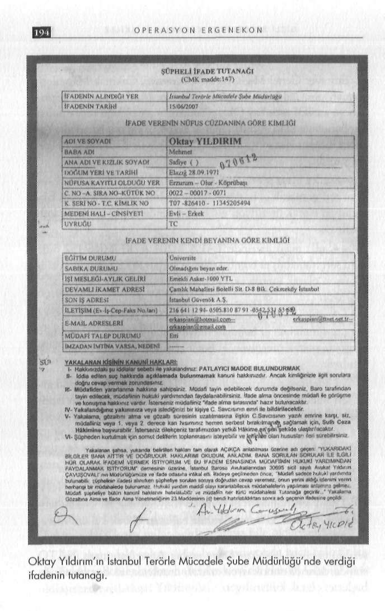

G İ Z L İ B E L G E L E R D E K A R A N L I K İ L İ Ş K İ L E R
Gönderen bu kez farklı isimdi. Çelik'in eski erkek arkadaşı
- Öznur Çelik isminin hem Dink hem Malatya cinayetlerin
Hasan Türüt...
de, üstelik cinayetin hemen ardından gündeme getirilmesi tesa
Çelik, Dink cinayetiyle ilgili bu iddiayı ise şöyle cevapladı: düf veya ifadesine göre birilerinin kendisiyle uğraşması olabilir.
Ama arkadaş çevresinin kirli ilişkiler içinde olması, ismini haliy
"Hasan Türüt ile tekvando maçı için Adana'ya gittiğimde tale dövüş alanına çekmektedir.
nışmıştım. Zaman zaman telefonla görüşmekteyim. Hasan Türüt Rize'de ikamet etmektedir. Hrant Dink'in öldürüldüğü dönem
Malatya'nın siyasi mesajı
lerde Hasan Türüt'ün kullanmakta olduğu bu mail adresi çalın
Hrant Dink cinayetinden hemen sonra 21 Ocak 2007 günü mıştı. Mail adresini çalan şahıs İstanbul Emniyet Müdürlüğü'ne kaleme aldığım yazıda, Türkiye'nin yeni cinayetlere hazırlıklı olbana sormuş olduğunuz ihbarı atmış. Bu ihbarla ilgili olarak arması gerektiğinin altını çizmiştim.
kadaşım Hasan Türüt'ün Rize'de ifade verdiğini yaptığımız bir telefon görüşmesinde öğrendim.
Çıkış noktamız, Türkiye'yi kaosa sürüklemek ve içine kapanık hale getirmek isteyenlerin Cumhurbaşkanlığı ve milletveki
Benim adıma 0 546 805 802 13 numaralı Telsim hat alındıli genel seçimleri nedeniyle kanlı eylemlerine hız verecekleri ğını ve Tekvando Federasyonu Başkanlığı'na mesaj atıldığını öğkaygısıydı. Bu eylemin misyonerler üzerinden ve Cumhurbaşrendim. Adıma alınan bu telefon hattıyla ilgili olarak Ankara kanlığı adaylık sürecinin ilk günlerinde planlanmış olmasının, Cumhuriyet Başsavcılığı'na suç duyurusunda bulundum. Yine siyasi mesajı vardır.
beni kötülemek için babamın cep telefonuna mesajlar atılmıştı.
Dava süreci de Hrant Dink cinayetinde olduğu gibi vahşete Bu ihbarı atan beni yakınen tanıyan ve benimle ne sorunu oldukarışanların karanlık ilişkiler ağına girdiklerini ortaya koymuştur.
ğunu bilmediğim biri. Beni zor duruma düşünmek istiyor ama kimin neden yaptığını bilmiyorum.
İhbarda diğer ismi geçen Kamil Özer isimli şahıs Ankara Kayaş'ta Kingboks antrenörlüğü yapmaktadır. Katıldığımız maçlardan dolayı yaklaşık bir yıldır tanımaktayım. Kendisi ile zaman zaman telefonla tekvando görüşürüm, başka görüşmüşlüğüm yoktur. Benim herhangi bir örgüt ile ilgim yoktur."
Ringler tetikçi sahası
Buradan çıkardığım iki önemli sonuç var:
- Tekvando, boks, Kingboks gibi dövüş tekniğine dayalı spor branşları, çete organizatörlerinin ilgi alanı haline gelmiş. Malatya cinayeti sanığı Emre Günaydın ve Dink cinayeti sanıkları Yasin Hayal ile Ogün Samast'ın da aynı spor dallarına ilgi duydu
ğunu dikkate alırsak, abartılı bir yorum olmaz sanırım.
G İ Z L İ B E L G E L E R D E K A R A N L I K İ L İ Ş K İ L E R
El bombalarının sicili
Emniyet Genel Müdürlüğü, "Ümraniye, Çakmak Mahallesi, Samanyolu Caddesi, Güngör Sokak, No: 2" adresinde ele geçirilen ve emekli astsubay Oktay Yıldırım'a ait olduğu öne sürülen cephanelikle ilgili ayrıntılı olarak ekspertiz raporu hazırladı. Yapılan incelemeler sonucunda cephanelikle ilgili rapora şu bulgular yazıldı: ÜMRANİYE ÇÖPLÜĞÜ
- 9 adet maşa üzerinde MKE MOD 45 KF-MKE-1-58 12-94
aynı seri numaralı el bombası fünye grubu: MKE tarafından fabrikasyon olarak üretiliyor, el bombalarında başlatıcı olarak kullanılıyor.
Türkiye, Cumhurbaşkanlığı krizinin zorunlu kıldığı 22 Tem-
- 4 adet maşa üzerinde TAPA M204 A2KF-MKE-152 6-83
muz'daki erken seçime hazırlanırken, 12 Haziran 2007 günü aynı seri numaralı el bombası fünye grubu: MKE tarafından fab
Ümraniye Çakmak Mahallesi Güngör Sokak'taki bir gecekonrikasyon olarak üretiliyor, el bombalarında başlatıcı olarak kulduya yapılan baskın, son 5 yıldaki tüm karanlık ilişkileri deşifre lanılıyor.
edecek çok özel bilgilerin yolunu açtı. Baskın, çetelerle mücade
- 2 adet maşa üzerinde TAPA M204 A2KF-MKE-169 5-85
lede önemli bir kırılma noktasıydı. Bu gecekonduda emekli astaynı seri numaralı el bombası fünye grubu: MKE tarafından fabsubay Oktay Yıldırım'in parmak izlerinin bulunduğu 27 el bomrikasyon olarak üretiliyor, el bombalarında başlatıcı olarak kulbası ele geçirildi.
lanılıyor.
Danıştay saldırısından sonra aranırken intihar teşebbüsünde
- 2 adet maşa üzerinde MKE MOD 45 KF-MKE-1-8 5-88 aybulunan emekli Yüzbaşı Muzaffer Tekin'i hastanede sık sık ziyanı seri numaralı el bombası fünye grubu: MKE tarafından fabriret eden Yıldırım, Tekin gözaltına alındığında "Sayın komutakasyon üretiliyor, el bombalarında başlatıcı olarak kullanılıyor.
nım, bu abdestle bu namaz kılınmaz. Bu köprünün altından çok
- 1 adet maşa üzerinde MKE MOD 45 KF-MKE-1-25 10-92 sesular akacak" diye bağıran kişiydi. Yıldırım, Danıştay sorgusunri numaralı el bombası fünye grubu: MKE tarafından fabrikasyon dan kurtulunca Tekin'i yanaklarından öpüp ilk kutlayan, Kuva-olarak üretiliyor, el bombalarında başlatıcı olarak kullanılıyor.
yı Milliye Derneği'nin müdavimi ve hızlı savunucularındandı.
- 2 adet maşa üzerinde FÜZE M204A1 LOT FJZ-2-286 NOV
Emniyetteki sorgusunda "Bu bombaları Hasdal Kışlası'nın 1953 aynı seri numaralı el bombası fünye grubu: Amerikan fab
çöplüğünde buldum" diyen Yıldırım'ın ilk destekçisi de Muzaffer rikasyon üretimi, el bombalarında başlatıcı olarak kullanılıyor.
Tekin oldu: "Zaten onlar hurda, patlasa bile öldürmez ki..."
- 3 adet maşa üzerinde FÜZE M204 Al LS-2-64 12-52 aynı İkili arasındaki yakın ilişki, bu operasyonda iyice belirginleş-seri numaralı el bombası fünye grubu: Amerikan imalı, NATO
ti. Tekin o bombalardan haberdardı ya da Hasdal Çöplüğü'nde standartlarında fabrikasyon olarak üretiliyor, el bombalarında dolaşırken rastlamıştı Yıldırım'a!
başlatıcı olarak kullanılıyor.

G İ Z L İ B E L G E L E R D E K A R A N L I K İ L İ Ş K İ L E R
- 2 adet maşa üzerinde HGR Z DM 72 LOS FMP-16 aynı seri numaralı el bombası fünye grubu: Alman imali N A T O standartlarında fabrikasyon olarak üretiliyor, el bombalarında başlatıcı olarak kullanılıyor.
- 1 adet maşa üzerinde HGR Z DM 72 LOS FMP-22 seri numaralı el bombası fünye grubu: Alman imali N A T O standartlarında fabrikasyon olarak üretiliyor, el bombalarında başlatıcı olarak kullanılıyor.
- 1 adet maşa üzerinde HGR Z DM 72 LOS FMP-24 seri numaralı el bombası fünye grubu: Alman imalı N A T O standartlarında fabrikasyon olarak üretiliyor, el bombalarında başlatıcı olarak kullanılıyor.
- 18 adet üzerinde yazı ve rakam grubu bulunmayan 32 parça baklava dilimli pik dökme demirden oluşan ağız tapaları kapalı el bombaları gövdesi: MKE tarafından fabrikasyon olarak patlamadan sonra 32 parçaya bölünebilecek şekilde askeri amaçlı savunma tipi el bombalarının gövdesi olarak üretiliyor, el bombalarında dış kap olarak parça tesiri ve basınç etkisi için kullanılıyor.
- 1 adet üzerinde içe kabartma yazı ile RFX Ll 1 ibaresi bulunan el bombası gövdesi: ABD Deniz Kuvvetleri tarafından kullanılmak üzere fabrikasyon olarak içine T N T patlayıcı konacak şekilde kübik olarak üretiliyor.
- 1 adet üzerinde içe kabartma yazı ile RFX Al 2 ibaresi bulunan el bombası gövdesi: ABD Deniz Kuvvetleri tarafından kullanılmak üzere fabrikasyon olarak içine T N T patlayıcı konacak şekilde kübik olarak üretiliyor.
- 1 adet üzerinde GRENADE H A N D FRAG M 26 5-53
COMP B LOT LS-14-142 ibaresi bulunan el bombası gövdesi: Amerikan imalı olup N A T O standartlarında üretiliyor, asıl dolgusu TNT-RDX patlayıcılardan oluşuyor.
- 2 adet üzerinde GRENADE H A N D FRAG M 26 5-53COMP В LOT LS-14-107 ibaresi bulunan el bombası gövde-